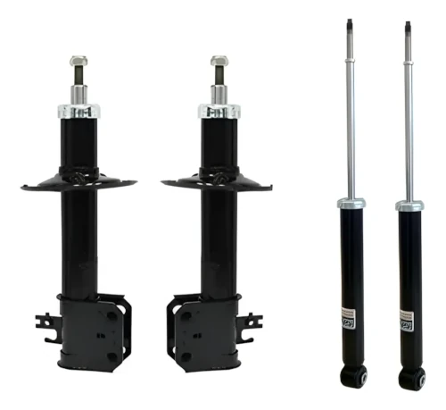
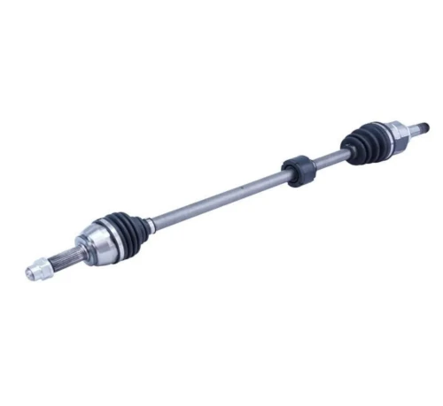
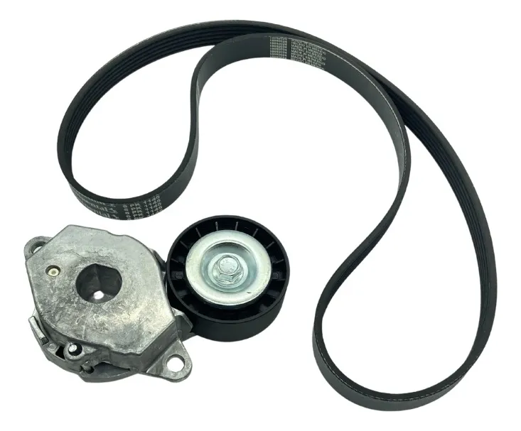

Embreagens
Quando substituir?
1. Embreagem deslizando ou patinando: perda de aderência do disco; desgaste da lona
do disco, placa
do platô e/ou volante motora.
2. Quebra do colar de embreagem ou da mola membrana: barrulho metálico extranho.

Amortecedores
Quando substituir?
1. Perda da compressão; vazamento do óleo, sem controle das oscilações das molas.
2. Travamento; suspensão com pouca ou nenhuma oscilações das molas.

Coxins e batedores
Quando substituir?
1. Desgaste do batedor; esfarelamento.
2. Desgaste do coxin; barrulho extranho na extremidade da aste do amortecedor.

Bandejas
Quando substituir?
1. Buchas estragadas.
2. Pivô com folga; necessário elevação do veículo.

Buchas do eixo traseiro

Discos de Freio
Quando substituir?
1. Desgaste excessivo; as paredes do disco ficam mais finas e com irregularidades. É possível retificar
Ir para agendamento
Pastilhas de freio
Quando substituir?
1. Desgaste natural; é comum ouvir um barulho metálico (do limitador) quando estão no momento da troca. Algumas possuem um sensor eletrônico.
Ir para agendamento
Lonas de freio
Quando substituir?
1. Desgaste natural; o freio de mão fica aparentemente desrregulado ou não estaciona
o veículo.
Relação de troca 2x1 em função da troca das pastilha; trocar na segunda troca
das pastilhas.

Cilindro mestre
Quando substituir?
1. Desgaste de o'rings e/ou vazamento de fluído; o pedal de freio fica sem pressão, quase encostando no açoalho. É possível ver vazamento de fluído de freio.
Ir para agendamento
Servo freio
Quando substituir?
1. Pedal do freio fica "pesado"; é necessário mais esforço para frear. É possível ouvir um barulho de ar escapando.
Ir para agendamento
Junta homocinética
Quando substituir?
1. Barulho de "estalo" ao esterçar a direção; o barulho é mais evidente quando numa curva em velocidade lenta.
Ir para agendamento
Eixo completo
Quando substituir?
1. Barulho de "estalo" ao esterçar a direção ou quando em linha reta em média velocidade.
Ir para agendamento
Deslizante e trizeta
Quando substituir?
1. Barulho de "estalo" quando em linha reta em média velocidade.
Ir para agendamento
Kit radiador
Quando substituir?
1. Vazamento no radiador ou no recipiente de expansão.
2. Defeito na tampa no recipiente de expansão.
3. Mal funcionamento do eletro ventilador.
4. Elevação da temperatura do motor.

Coxins do motor
Quando substituir?
1. Desgaste das borrachas.
2. Vibração excessiva do motor ao arrancar ou na marcha ré.
